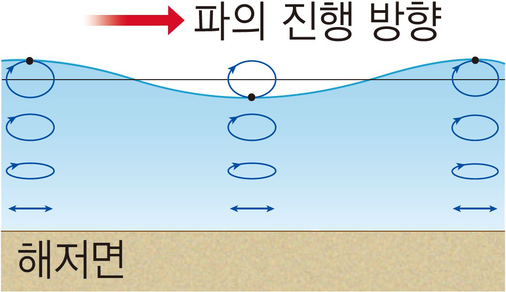
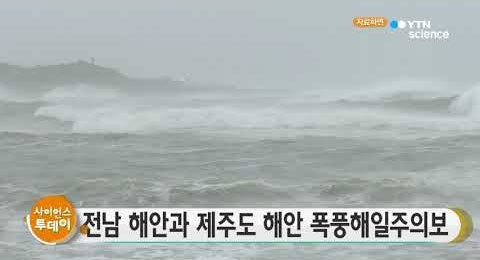
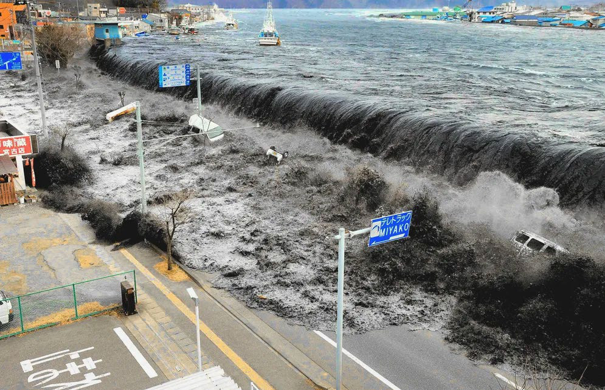
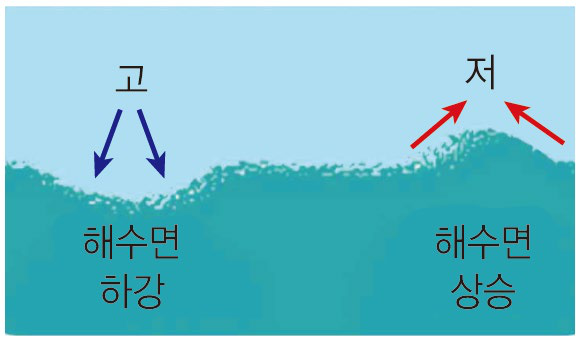
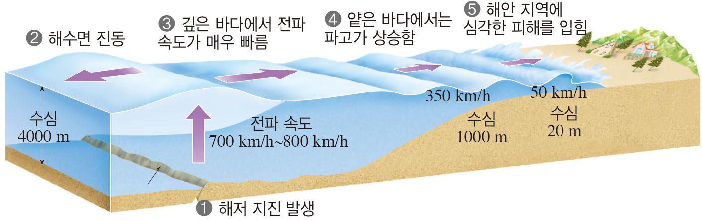
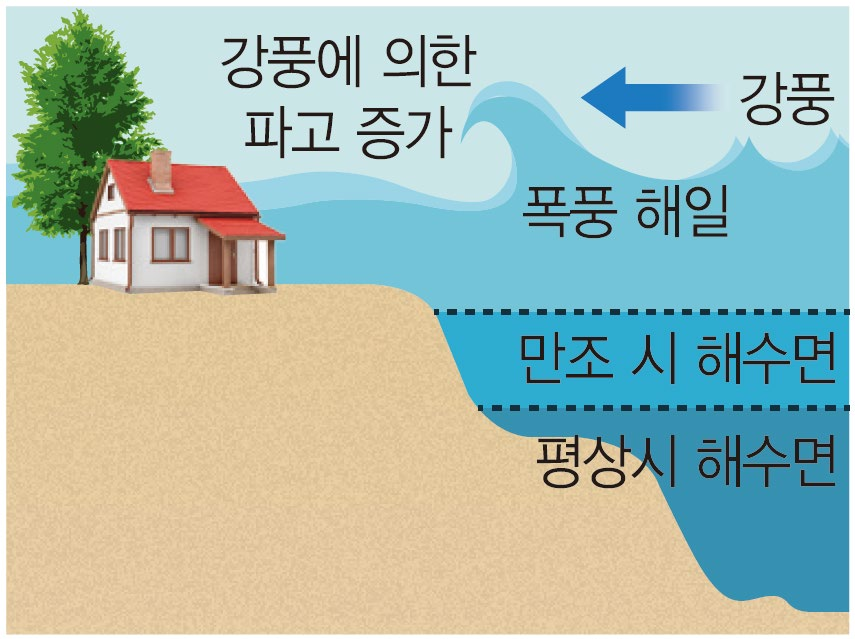
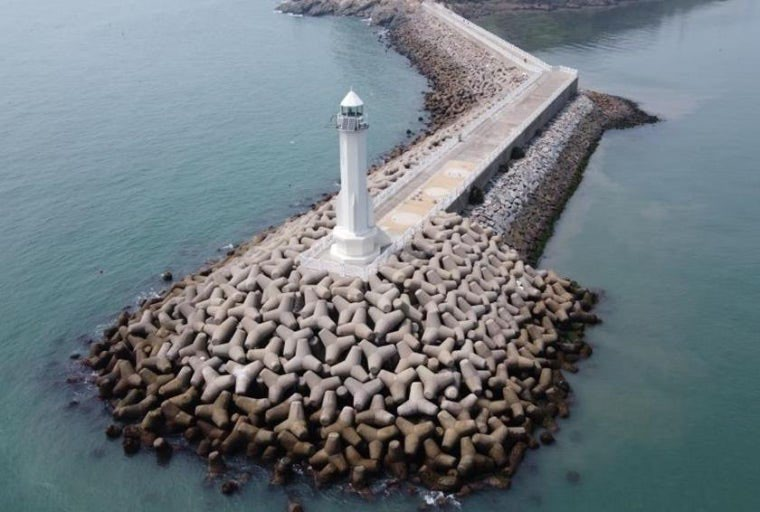
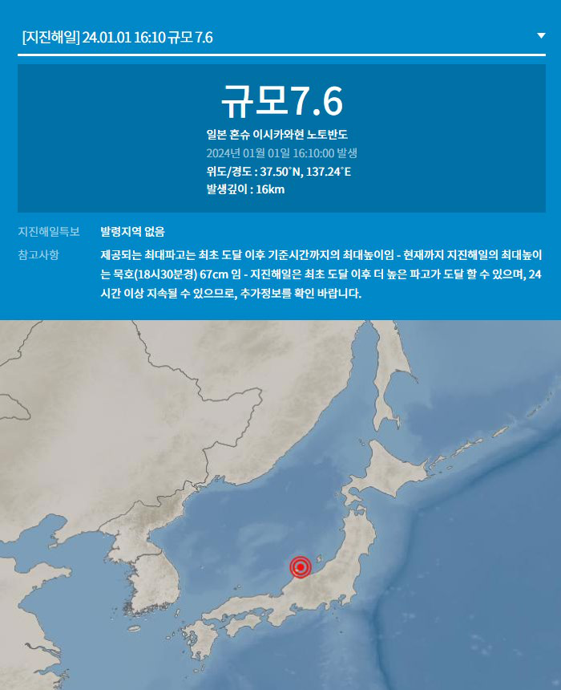
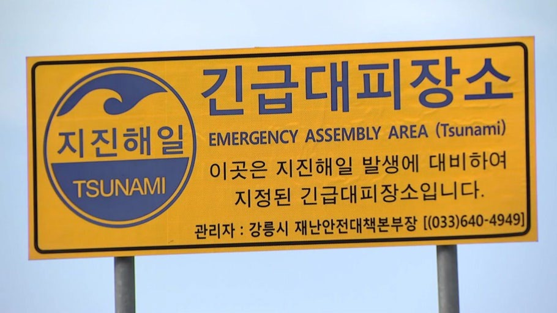

폭풍 해일
지진 해일(쓰나미)





| → Space | 다음 (클릭도 가능) |
| ← | 이전 |
| N | 발표자 노트 |
| O | 목차 (누르면 그 장으로) |
| B W | 검은 화면 / 흰 화면 |
| F | 전체 화면 |
| M | 책갈피 목록 (반마다 저장 · 눌러서 이동) |
| P | 애니메이션 일시정지 · 이어서 재생 (멈춘 상태에서 → 도 재생) |
| L | 레이저 포인터 켜기·끄기 (누른 채 움직이면 선, 떼면 사라짐) |
| 두 손가락 벌리기 트랙패드 핀치 · Ctrl+휠 | 부분 확대 (확대 중 끌어서 옮기기 · 두 번 톡이나 Esc로 원래대로) |
| Esc | 덮개 닫기 |